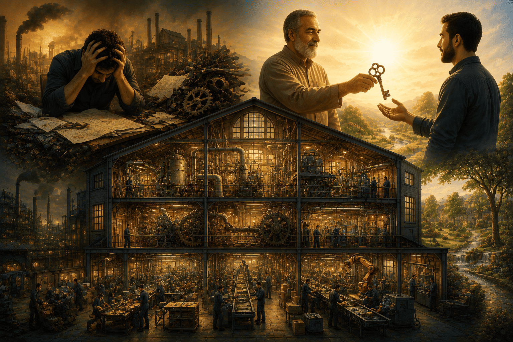
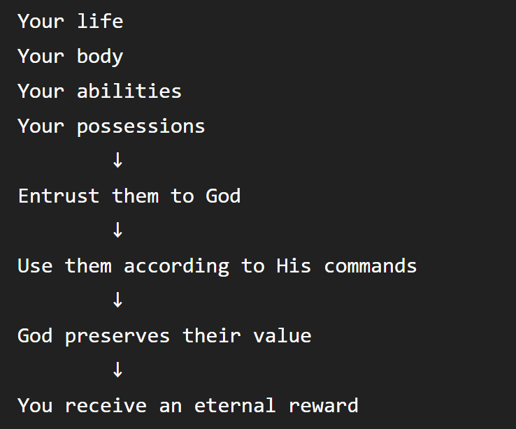
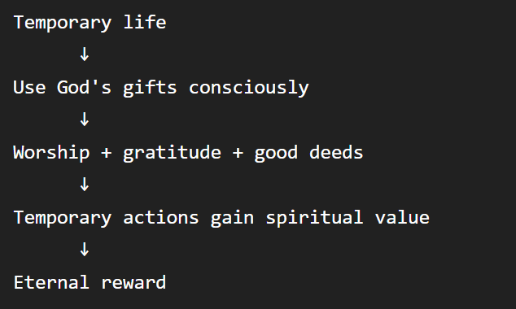

The Sixth Word of The Words by Imam Said Nursi explains the relationship between human beings, their body and soul, and the purpose of life.
Its central message is that a person does not truly own themselves. Our life, body, abilities, and possessions are entrusted to us by God. When we recognize this and "sell" ourselves to God, we gain something far greater in return.
Imam Nursi compares the human being to a factory or a complex piece of machinery.
Imagine that you own a factory containing:
If you try to manage everything yourself, you become overwhelmed.
But if you hand the factory over to its rightful owner, the owner takes responsibility for maintaining and operating it.
The same principle applies to the human being.

Our body is an extraordinarily complex "factory":
We did not create or design any of these systems.
Imam Nursi emphasizes the distinction between ownership and stewardship.
We normally say:
"My body."
"My life."
"My wealth."
But ultimately, these things are temporary trusts. We did not choose:
Therefore, our relationship to these things is closer to trusteeship than absolute ownership.
Imam Nursi describes a spiritual "transaction":

In other words, God asks us to "sell" what is already His.
And what does He give in return ?
Eternal life and Paradise.
It does not mean abandoning the world or refusing to use your abilities.
Rather, it means changing your understanding of ownership.
Instead of:
"Everything I have belongs entirely to me."
The believer thinks:
"These are gifts entrusted to me by God, and I should use them according to His pleasure."
This transforms ordinary life into worship.
Consider your body, you don't need to consciously control:
They are already being managed without your conscious effort.
This is an indication of how dependent we are.
The believer therefore entrusts the body to its Creator while taking responsibility for how it is used.
Imam Nursi contrasts two approaches.
If you regard yourself as the owner:
You constantly worry:
You carry an enormous burden.
If you regard God as the owner:
You still take responsibility, but you don't imagine that you control everything.
You can say, in effect:
"I am entrusted with this, and its true Owner knows how to manage it."
This produces peace and trust.
Imagine you are given an expensive car by its owner for a specific purpose, you don't need to say:
"This car is mine forever."
Instead, you use it responsibly according to the owner's instructions.
You enjoy using it, but you understand that you are a trustee.
Imam Nursi applies this idea to everything we have.
Our body is a trust.
Our wealth is a trust.
Our abilities are a trust.
Our time is a trust.
Our life is a trust.
The Sixth Word teaches that:
The Sixth Word teaches that our life, body, abilities, and possessions are trusts from God;
By entrusting them back to their true Owner and using them according to His purpose, we transform our temporary existence into something of eternal value.
